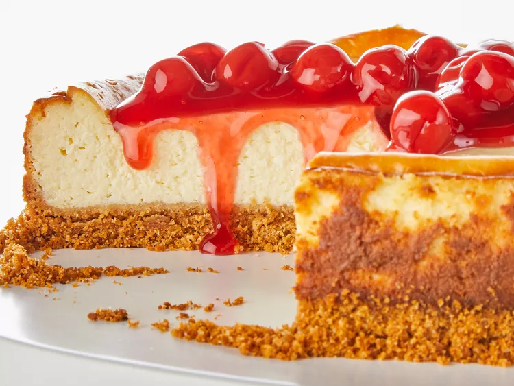

Our Best Cheesecake

Cherry Topped Cheesecake
This is our best recipe for cheesecake with a rich, creamy texture and cherry topping for a showstopping dessert that is also easy to make!
Ingredients
- Graham Cracker Crumbs
- Butter/li>
- 1 ¼ cups of Sugar
- Cream Cheese
- 1 cup of Sour Cream
- 2 teaspoons of Vanilla
- 3 whole Eggs
- Pie Filling (Optional)
Directions
- Mix the graham cracker crumbs, melted butter, and some of the sugar in a bowl. Use your fingertips to press the mixture into the bottom of a springform pan.
- Beat the cream cheese and sugar until smooth. Mix in the sour cream and vanilla. Beat in the eggs one at a time on low speed. Pour the filling over the crust.
- Bake the cheesecake in a preheated oven until the filling is almost set. Run a knife around the rim to loosen the sides and allow it to cool before removing it from the pan. Refrigerate the cheesecake for at least four hours before serving.